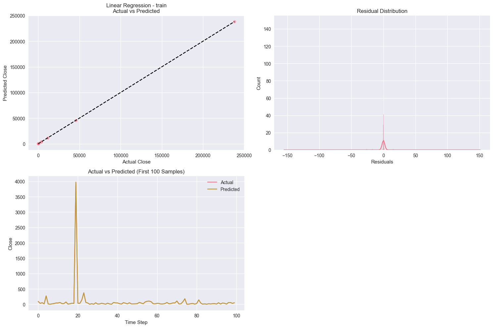
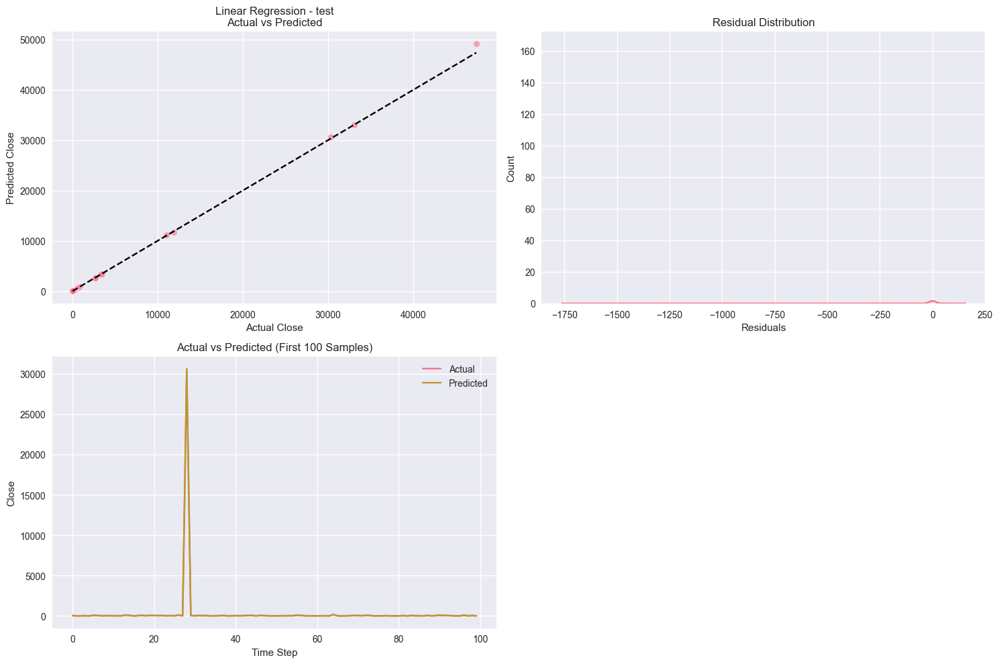

Linear Regression
About This Model
Finds the best linear relationship between features and target.
Performance Metrics
| Metric | Training | Test | Validation | Description |
|---|---|---|---|---|
| MSE | 62.9273 | 3262.2522 | 8219.6328 | Mean Squared Error: Measures average squared difference between actual and predicted values. |
| MAE | 0.9269 | 2.8996 | 5.4869 | Mean Absolute Error: Average absolute difference between predictions and actuals. |
| R² | 1.0000 | 0.9993 | 0.9965 | R² Score: Proportion of variance in target explained by the model. |
| Training Time (s) | 0.01 | Time taken to train the model | ||
Visualizations
Train Set
Top Left: Actual vs Predicted values (ideal points fall on dashed line)
Top Right: Residual distribution (should be centered at zero)
Bottom Left: Time series comparison of first 100 samples
Bottom Right: Feature importance scores
Test Set
Top Left: Actual vs Predicted values (ideal points fall on dashed line)
Top Right: Residual distribution (should be centered at zero)
Bottom Left: Time series comparison of first 100 samples
Bottom Right: Feature importance scores
Val Set

Top Left: Actual vs Predicted values (ideal points fall on dashed line)
Top Right: Residual distribution (should be centered at zero)
Bottom Left: Time series comparison of first 100 samples
Bottom Right: Feature importance scores